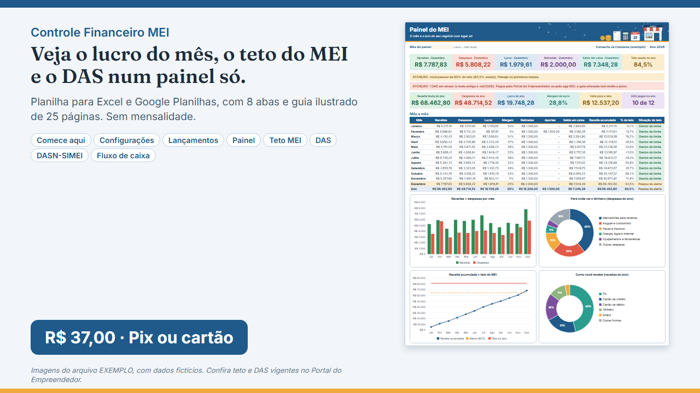
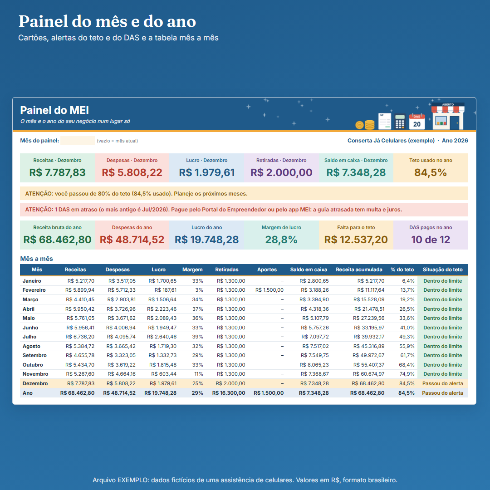
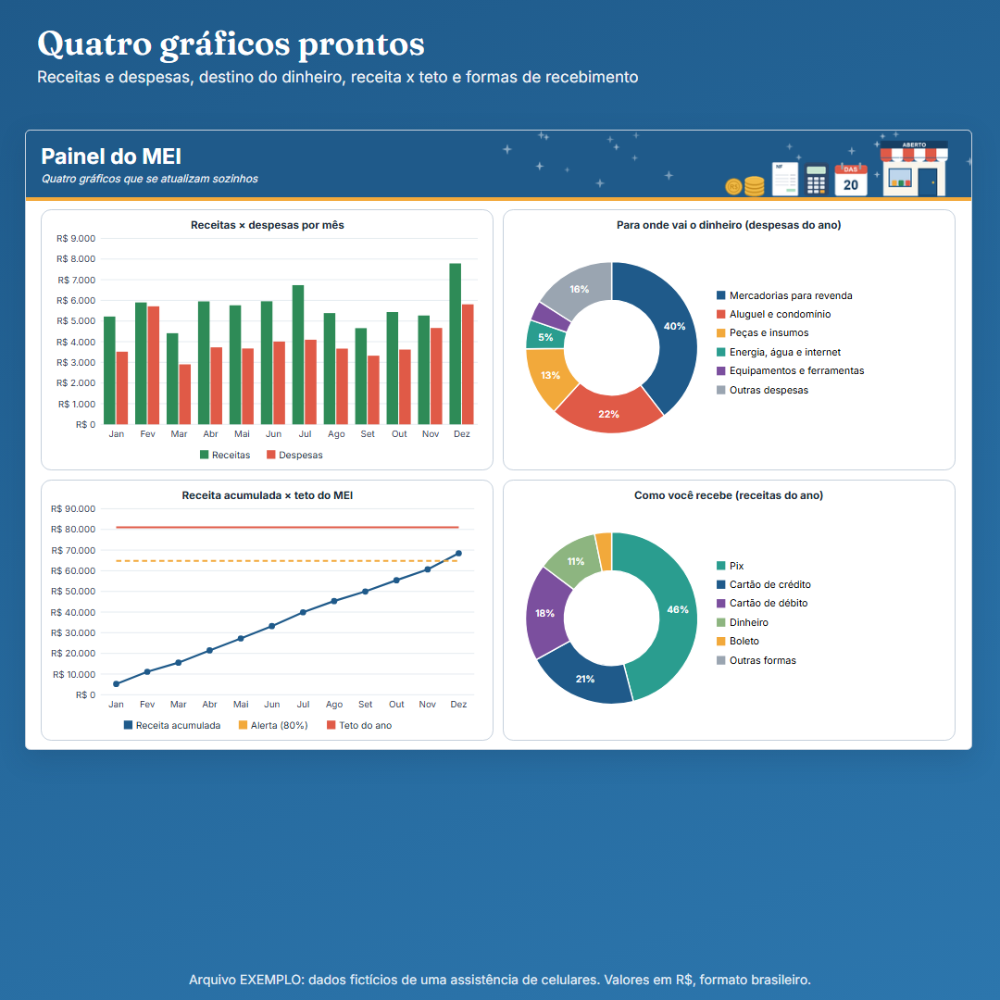
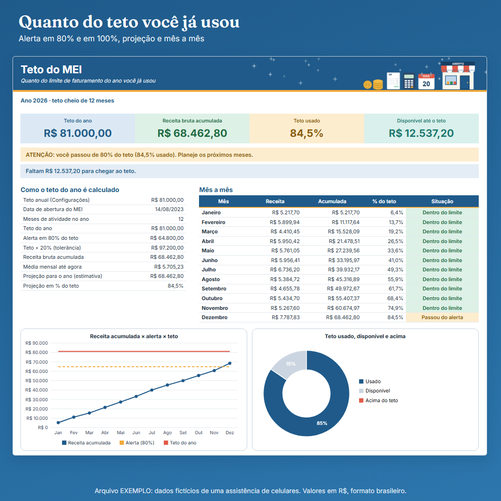
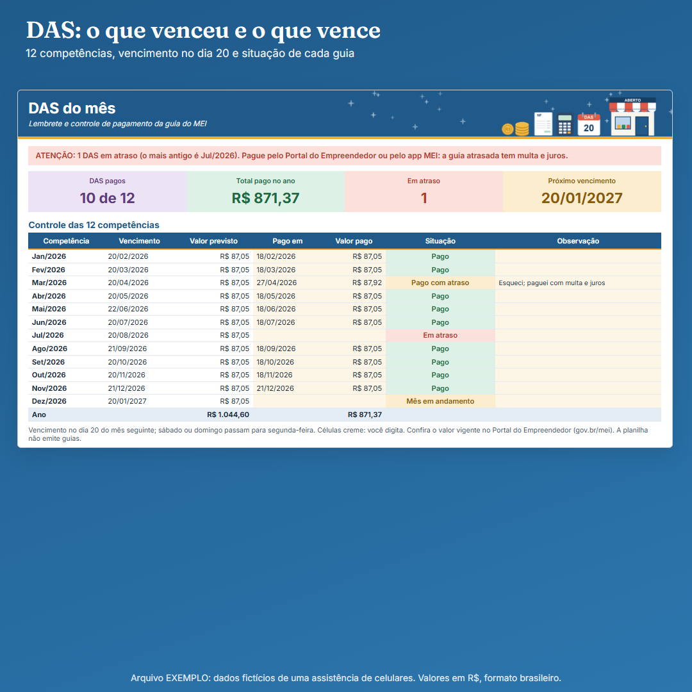
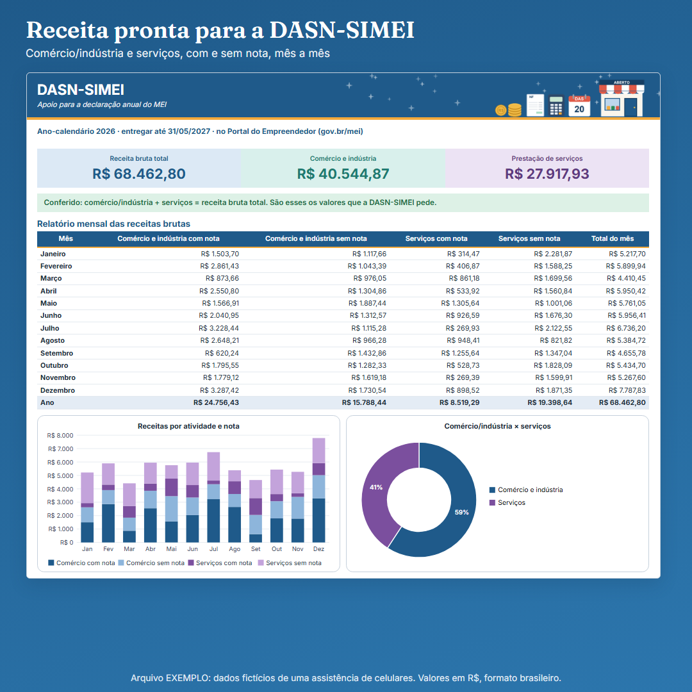
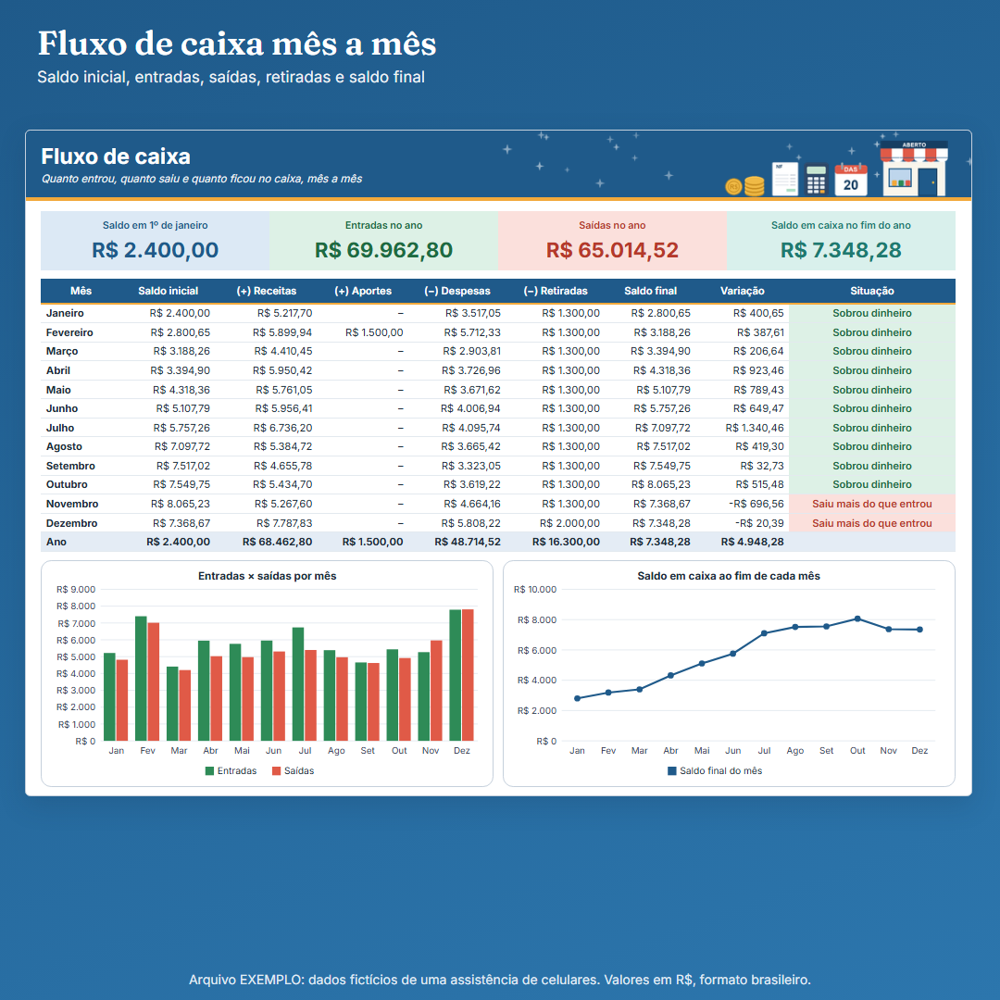
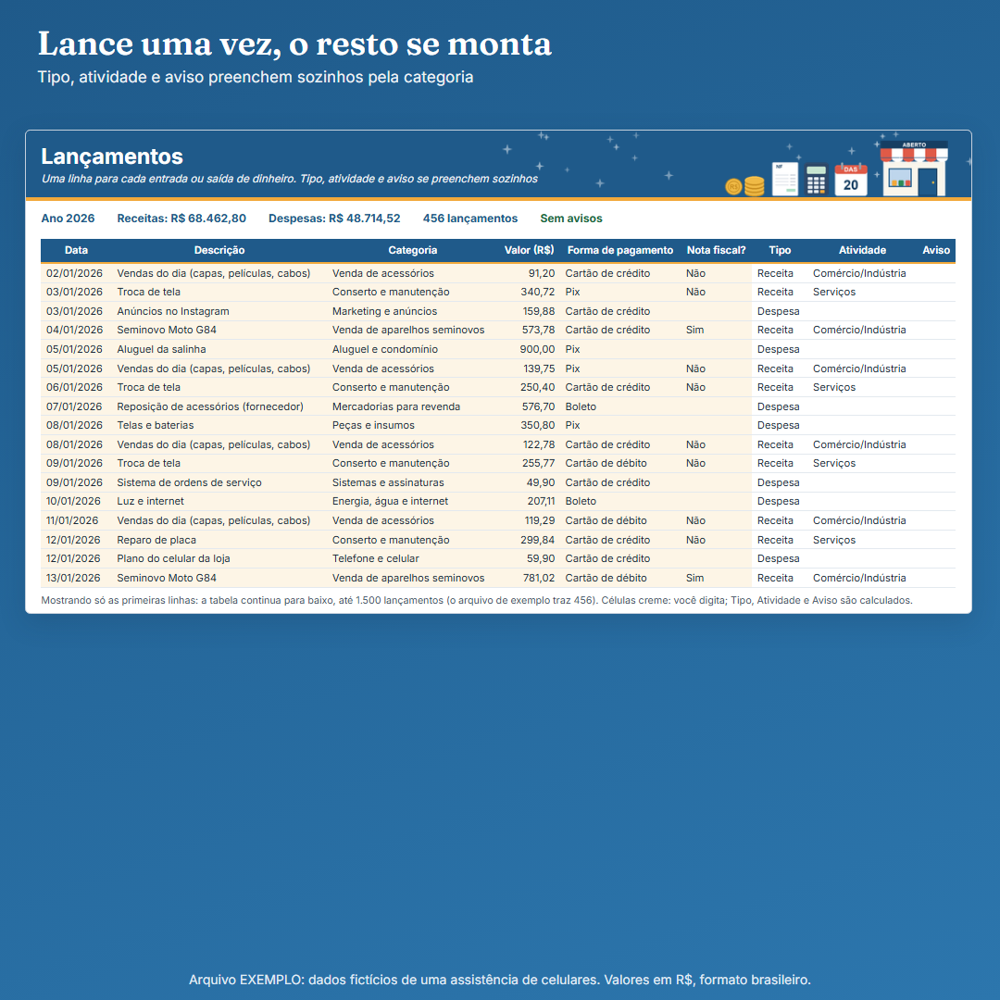
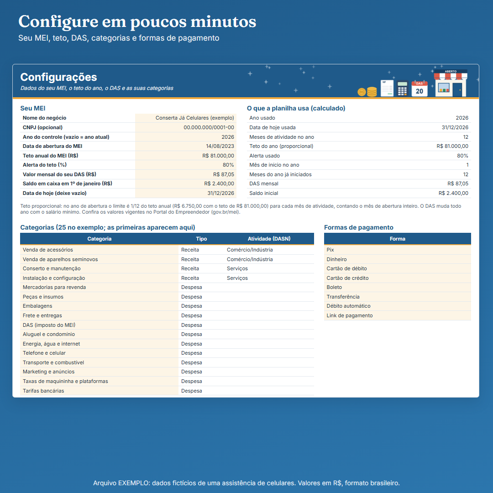
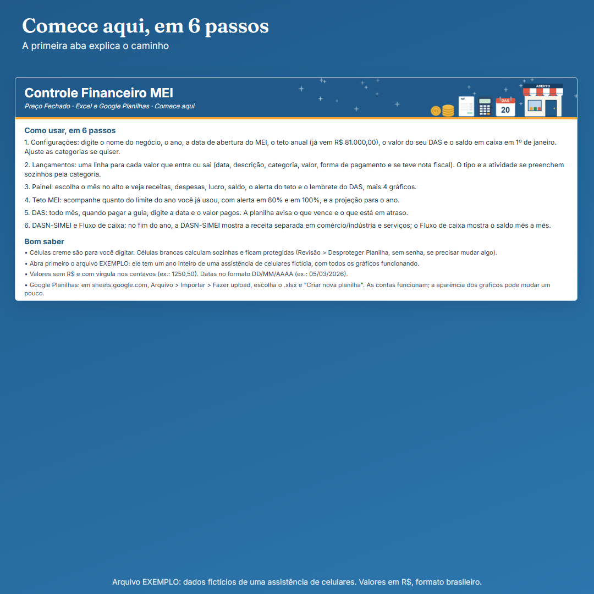

Planeja Home · uma linha da Planeja Home
Veja o lucro do mês, quanto do teto do MEI você já usou e quais DAS estão pagos ou em atraso, num painel só.
Planilha para MEI e autônomo, para Excel e Google Planilhas. Você lança cada entrada e saída uma vez e o painel se monta sozinho. Vem com um arquivo de exemplo preenchido e um guia ilustrado de 25 páginas. Sem mensalidade.

Imagens do arquivo EXEMPLO, com dados fictícios de uma assistência de celulares.
O problema
O dinheiro do negócio se mistura com o pessoal, você não sabe se está perto do teto do MEI e o DAS só vem à cabeça quando já atrasou.
O que é
Uma planilha com 8 abas: lançamentos por categoria, painel do mês e do ano, acompanhamento do teto, controle do DAS, apoio para a DASN-SIMEI e fluxo de caixa. O tipo e a atividade de cada lançamento se preenchem sozinhos pela categoria.
O que vem
Três arquivos: a planilha em branco, a planilha EXEMPLO (um ano inteiro preenchido, com todos os gráficos) e o guia em PDF de 25 páginas, com prints numerados, rotina de uso e perguntas e respostas.
- Comece aqui: 6 passos e os avisos importantes
- Configurações: nome, ano, data de abertura, teto anual, alerta em %, valor do DAS, saldo inicial, categorias e formas de pagamento
- Lançamentos: até 1.500 linhas, com categoria, forma de pagamento e nota fiscal
- Painel: cartões do mês e do ano, alerta do teto, lembrete do DAS, tabela mês a mês e 4 gráficos
- Teto MEI: quanto do limite você usou, com projeção e situação em 5 níveis
- DAS: 12 competências, vencimento, valor pago e situação de cada guia
- DASN-SIMEI: receita do ano separada em comércio/indústria e serviços, com e sem nota
- Fluxo de caixa: saldo inicial, receitas, aportes, despesas, retiradas e saldo final por mês









Para quem é e para quem não é
quem trabalha sozinho como MEI e quer saber o que entrou, saiu e foi retirado, acompanhar o teto e o DAS e chegar à declaração anual com a receita separada.
quem quer emitir nota ou guia, enviar declaração, calcular imposto ou ter contabilidade. A planilha não faz isso e não substitui contador.
O teto vem com R$ 81.000,00 e o DAS é um campo seu; ambos são editáveis. Confira os valores vigentes no Portal do Empreendedor (gov.br/mei). Produto independente, sem vínculo com órgão público.
Como acessar
Depois do pagamento, os arquivos ficam na área de membros e chegam por e-mail. Abra no Excel 2016 ou mais recente (ou Microsoft 365) e clique em "Habilitar edição". No Google Planilhas, use Arquivo > Importar > Fazer upload e escolha o .xlsx; as contas funcionam e os gráficos podem mudar um pouco de aparência. Preencha as células creme. Sem macros, sem internet.
Garantia de 7 dias
R$ 37,00, pagamento único. Pix ou cartão (parcelas com os juros do cartão, pagos por você).
Peça o reembolso em até 7 dias da compra, sem justificar.
Perguntas frequentes
Que programa preciso?
Excel 2016 ou mais recente, ou Microsoft 365, no Windows ou Mac. Também abre no Google Planilhas.O que vem na compra?
A planilha em branco, a planilha EXEMPLO e o guia ilustrado de 25 páginas em PDF.Quais são as abas?
Comece aqui, Configurações, Lançamentos, Painel, Teto MEI, DAS, DASN-SIMEI e Fluxo de caixa.Calcula ou emite o DAS?
Não. Você digita o valor do seu DAS e a planilha mostra o vencimento e se cada guia está paga, a vencer ou em atraso. Para emitir, use o Portal do Empreendedor ou o app MEI.O teto já vem preenchido?
Vem com R$ 81.000,00 como referência, editável. Confira o limite vigente no Portal do Empreendedor.Quantos lançamentos cabem?
Até 1.500 linhas por arquivo.Posso revender?
Não. Uso pessoal, de um negócio.E se eu não gostar?
Reembolso em até 7 dias.Planilha de organização. Não promete resultado financeiro. Uso pessoal; proibida a revenda. Planeja Home · contatoplanejahome@gmail.com